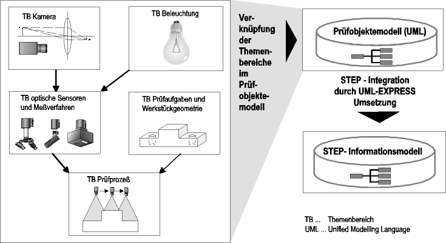

Obejektorientierte Modellierung von Prüfprozeß und Prüfdurchführung mit optischen Sensoren
Mit optischen Sensoren lassen sich Werkstückgeometrie und Oberflächeneigenschaften berührungslos prüfen. In Abbildung 1 sind die einzelnen Themenbereiche (TB) dargestellt. Das Licht wird von der Beleuchtung bzw. Laser ausgestrahlt und von der digitalen Kamera o. ä. empfangen. Daraus ergeben sich die Meßverfahren und optischen Sensoren. Die Sensoren können immer nur bestimmte Merkmale erfassen, so daß sie nur für bestimmte Prüfaufgaben geeignet sind. Im Prüfprozeß wird dann auch die Werkstückgeometrie beachtet. Diese ganzen Themenbereiche werden im Prüfobjektemodell verküpft. Für die Daten wurde ein STEP- Informationsmodell erstellt.

Abbildung 1